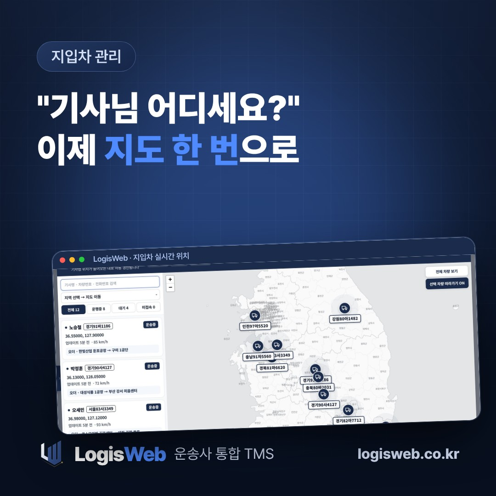
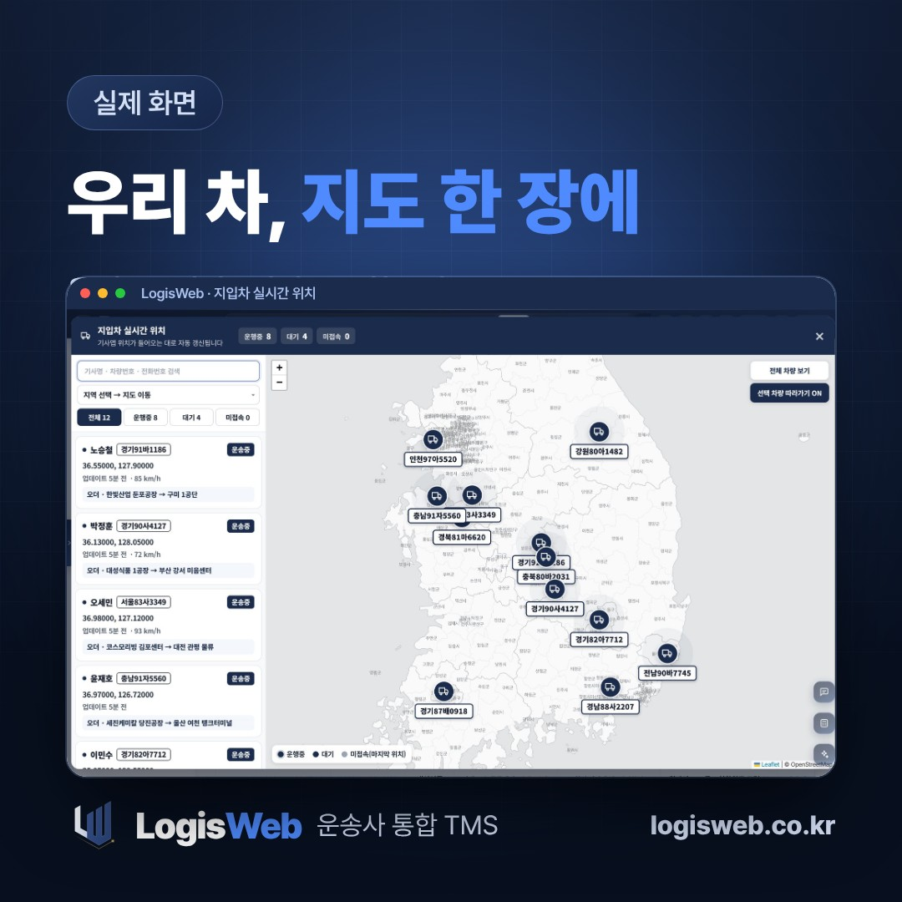
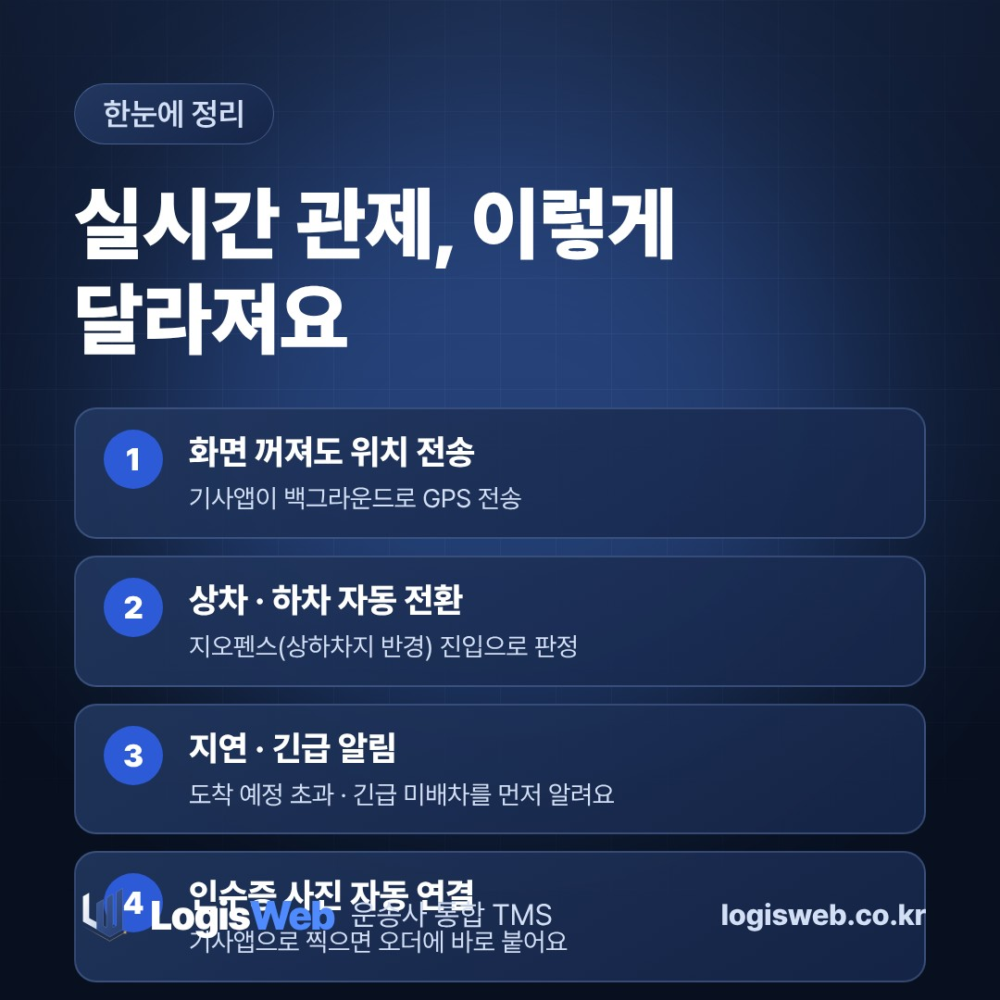

"기사님, 지금 어디쯤이세요?"
배차실에서 하루에 가장 많이 하는 말 중 하나예요. 화주사에서 "차 언제 와요?" 전화가 오면, 우리는 다시 기사님께 전화를 걸어요. 운전 중이라 못 받으시면 또 기다리고요.
로지스웹 기사앱을 기사님 휴대폰에 설치해 두면, 위치가 회사 화면으로 자동으로 올라와요.

[지입차 실시간 위치] 화면을 열면 운행중 · 대기 · 미접속 차량이 지도와 목록에 한 번에 나와요. 차량을 누르면 지금 맡은 오더(어디서 어디로), 속도, 연락처까지 보여요.
화주사에서 전화가 오면 지도를 보고 바로 답하면 돼요. 기사님께 다시 전화할 필요가 없어요.
지오펜스는 상차지 · 하차지 주변에 그어 둔 보이지 않는 원이에요.
상태가 자동으로 바뀌니까, 기사님이 버튼을 누르지 않아도 배차 화면에서 진행 상황을 볼 수 있어요. 도착 예정 시각을 넘기거나 긴급 미배차가 생기면 담당자에게 알림도 가요.

하차가 끝나면 기사님이 기사앱으로 인수증을 찍어요. 사진은 해당 오더에 자동으로 연결돼서, 담당자가 카톡으로 받은 사진을 다시 화주사에 보낼 일이 줄어요.
위치 확인 전화가 줄어들면, 그 시간에 배차를 한 건 더 잡을 수 있어요.
👉 무료 체험 신청: logisweb.co.kr (검색창에 "로지스웹")
※ 지입차 관제(GPS · 운행기록 · 사진)는 스탠다드 요금제부터 포함돼요.